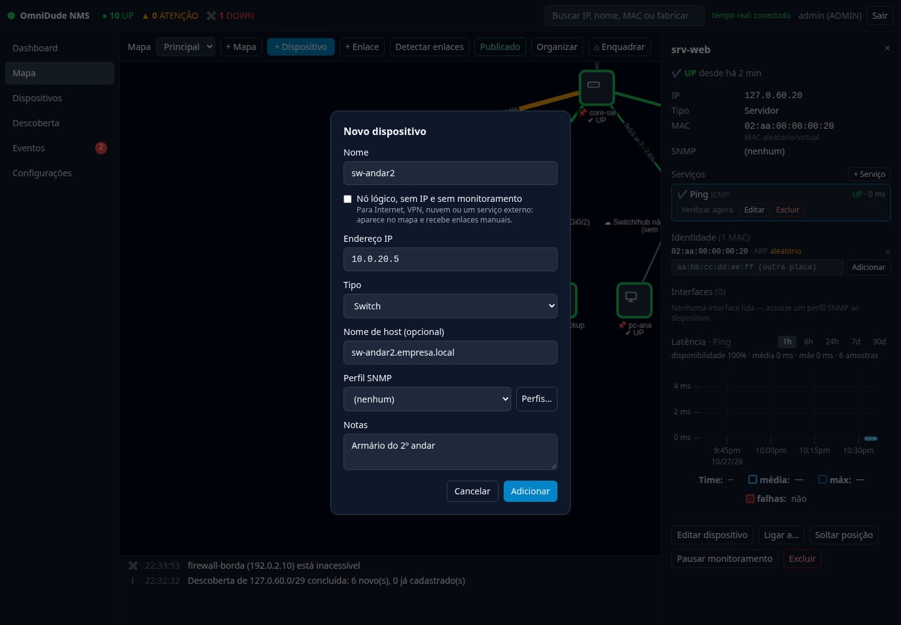
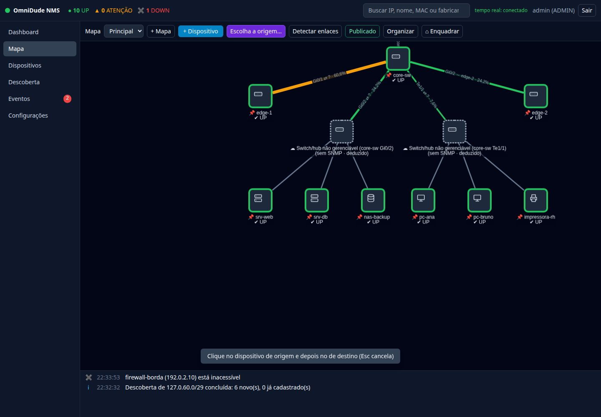
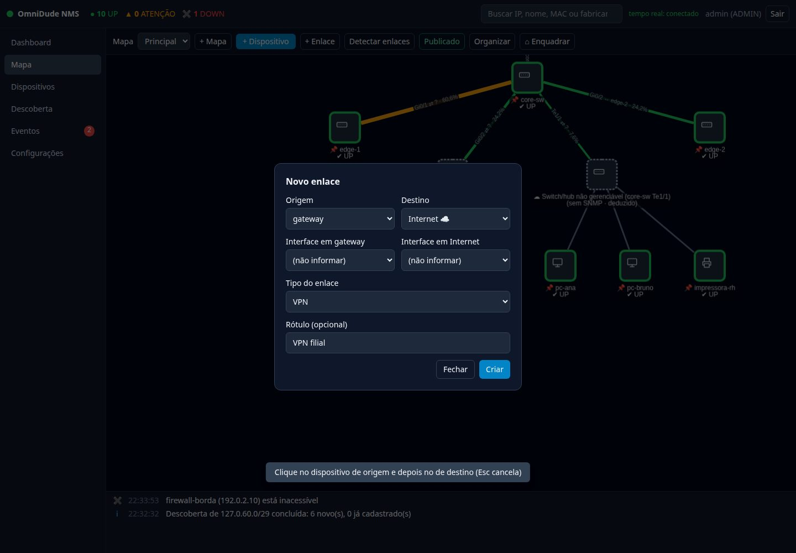

Ler o mapa#
Cada quadrado é um dispositivo; cada linha, um enlace. O ícone mostra o tipo, a borda mostra o estado e o rótulo traz o nome e o estado por extenso (o estado nunca depende só da cor).

| Aparência do nó | Significa |
|---|---|
Borda verde · ✔ UP | O dispositivo responde e os serviços estão bem. |
Borda âmbar · ▲ ATENÇÃO | Responde, mas um serviço está DOWN ou lento. |
Borda vermelha dupla · ✖ DOWN | Não responde à checagem âncora. |
Borda cinza · ? DESCONHECIDO | Sem resultado ainda. |
Nó semitransparente · PAUSADO | Em manutenção: não é checado e não gera alertas. |
Borda tracejada · nuvem ☁ | Nó lógico (você criou) ou deduzido (o OmniDude inferiu um switch ou hub sem SNMP). |
📌 antes do nome | Posição fixada: o Organizar não move. |
Cores e traços dos enlaces#
| Aparência | Significa |
|---|---|
| Linha cinza contínua | Enlace confirmado, sem leitura de tráfego. |
| Linha verde, âmbar, laranja; mais grossa quanto mais cheia | Utilização: abaixo de 50 %, de 50 a 80 %, a partir de 80 %. O percentual também aparece no rótulo. |
| Linha vermelha pontilhada | Uma ponta DOWN, ou interface com ifOperStatus = down. |
| Linha roxa tracejada | Enlace sugerido pela detecção: confirme ou descarte. |
| Linha cinza pontilhada fina | Enlace inferido por falta de dados (confiança baixa). |
| Verde-azulado traço-ponto · azul tracejado largo · verde-limão pontilhado | Tipos manuais: VPN, Internet/WAN e Wi-Fi. |
Mover e organizar#
- Arrastar um nó o move e grava a posição na hora.
- Organizar aplica um layout automático aos nós que não estão fixados.
- Fixar posição (inspetor) protege um nó do Organizar; Soltar posição desfaz.
- ⌂ Enquadrar ajusta o zoom para mostrar tudo.
- Use + Mapa para criar outros mapas (por prédio, andar ou cliente) e o seletor Mapa para alternar. Um dispositivo pode estar em mais de um mapa.
Cadastrar um dispositivo#
+ Dispositivo abre o formulário. Todo dispositivo novo recebe automaticamente uma checagem de Ping.


| Campo | Para que serve |
|---|---|
| Nome | Como aparece no mapa e nas buscas. |
| Nó lógico | Sem IP e sem monitoramento; só para receber enlaces (veja abaixo). |
| Endereço IP | Usado pelas checagens. Se o DHCP mudar o IP, o OmniDude pode atualizá-lo (Identidade e DHCP). |
| Tipo | Roteador, switch, firewall, access point, servidor, estação, impressora, storage, nuvem, rede ou outro. Define o ícone. |
| Nome de host | Opcional; apenas informativo. |
| Perfil SNMP | As credenciais para ler o equipamento. Perfis… abre o gerenciador. |
| Notas | Texto livre: localização, responsável, contrato. |
Para editar, abra o inspetor e use Editar dispositivo. Excluir remove o dispositivo, as checagens, o histórico e os enlaces dele.
Quando importar vários equipamentos, prefira a descoberta: ela já traz o tipo, o fabricante, o MAC e o perfil SNMP que funcionou.
O inspetor#
Clique num nó para abrir o inspetor, o painel da direita.

- Cabeçalho: nome, estado e há quanto tempo está nele.
- Dados: IP, tipo, MAC (com o fabricante), nome de host e perfil SNMP.
- Serviços: as checagens, com Verificar agora, Editar e Excluir (capítulo 5).
- Identidade: os MACs conhecidos (capítulo 9).
- Interfaces: lidas por SNMP, com taxas e gráfico (capítulo 6).
- Latência: o gráfico do serviço selecionado.
- Ações: Editar dispositivo, Ligar a…, Fixar/Soltar posição, Pausar monitoramento e Excluir.
Pausar o monitoramento#
Pausar monitoramento tira o dispositivo da checagem e dos alertas (aparece como PAUSADO), sem apagar nada. É o jeito certo de fazer manutenção em um equipamento. Para suspender as notificações de tudo, use o modo de manutenção.
Enlaces manuais#
A detecção automática acha o que a rede anuncia, mas nada impede que você desenhe o resto: uma VPN, o link da operadora, um equipamento remoto.
Pelo mapa#
- Clique em + Enlace. O botão muda para “Escolha a origem…” e uma dica aparece no rodapé.
- Clique no dispositivo de origem e depois no de destino.
- No formulário, escolha as interfaces (opcional), o tipo e um rótulo, e clique em Criar.


Por uma lista#
No inspetor, Ligar a… abre o mesmo formulário com a origem preenchida, e você escolhe o destino numa lista, inclusive dispositivos que não estão visíveis no mapa.


| Tipo | Uso |
|---|---|
| Cabo | Ligação física comum. |
| Wi-Fi | Enlaces sem fio. |
| VPN | Túneis entre sites. |
| Internet / WAN | O link da operadora. |
| Outro | O que não se encaixa acima. |
Enlaces manuais nascem confirmados e a detecção automática nunca os altera. Para editar ou apagar, clique na linha do enlace.
Nós lógicos: Internet, nuvem, VPN e redes#
Há coisas no seu diagrama que não têm um endereço para monitorar: a Internet, a nuvem de um provedor, uma VPN, uma VLAN. Para elas, marque Nó lógico ao criar o dispositivo. O nó:
- aparece no mapa como uma nuvem tracejada;
- não tem IP, não tem checagens e não entra nas contagens;
- serve só para receber enlaces (por exemplo, Internet ligada ao firewall de borda por um enlace do tipo Internet/WAN).
Os tipos Nuvem e Rede existem para isso e também valem para dispositivos com IP, quando você quer monitorar um destino na nuvem ou numa sub-rede. A detecção automática não apaga nem liga nada a nós lógicos.
Monitorar um destino externo. DNS público, o roteador de uma filial ou qualquer IP fora da sua rede são dispositivos comuns: cadastre com o IP, adicione as checagens (ICMP, DNS, TCP…) e ligue com um enlace manual.
Buscar e filtrar#
A busca do topo aceita IP, nome, MAC ou fabricante. Os nós que não casam ficam esmaecidos e Enter centraliza o primeiro que casa. Para listas maiores, use a tela Dispositivos.